68
Standard
Mathematics
2
Members of the ‘NIRAV’ Kudumbasree unit are making soaps. Being a holiday, Manav also went there with his mother.


68
Standard
Mathematics
2
Members of the ‘NIRAV’ Kudumbasree unit are making soaps. Being a holiday, Manav also went there with his mother.


5 United we stand
Unit
5
United we stand
69

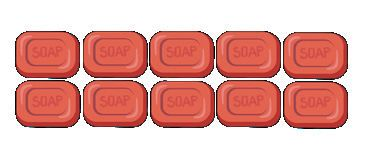


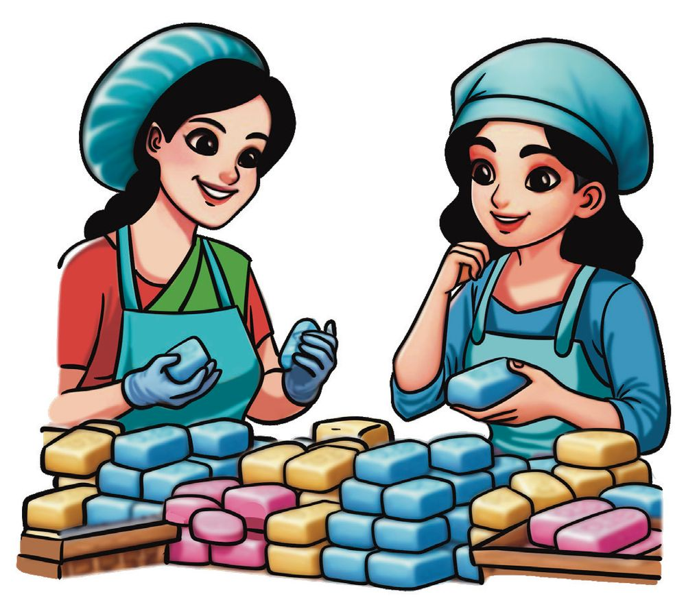

See the soaps each have counted.
Group of tens Ones Total
10 + 3
=
Shantha
Group of tens Ones Latha
70
Standard
Mathematics
2
Total
+
=
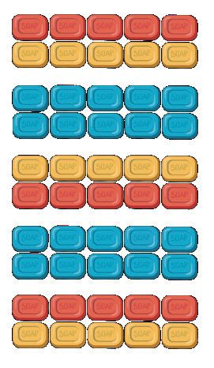
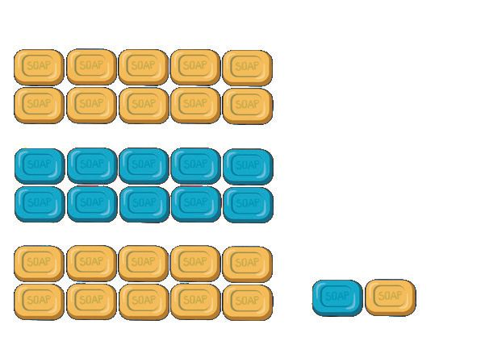
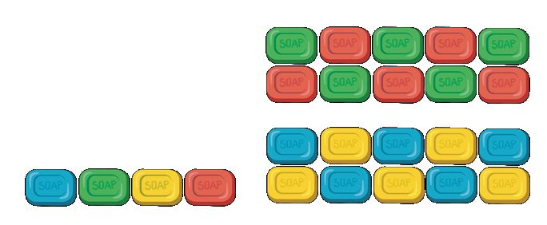


Group of tens Ones Total
Najma
+
=
Group of tens Ones Total
+
=
Rosie
Group of tens Ones
+
=
Nisha 5
Unit
Total
United we stand
71


How many soaps did Rosie and Shantha count together?
+
=
Rosie Counted
20 + 4 = 24
Shantha counted
10 + 3 = 13
Together they Counted.
30 + 7 = 37
24 + 13 = 20 + 10 + 4 + 3 20 and 10 = 30. 4 and 3 = 7. 30 and 7 = 37.
20 + 4 = 24 10 + 3 = 13 30 + 7 = 37
How many soaps did Santha and Najma count together?
13 + 50 = 10 + 50 + 3 = .......................... How many soaps did Latha and Nisha count together?
72
Standard
Mathematics
2
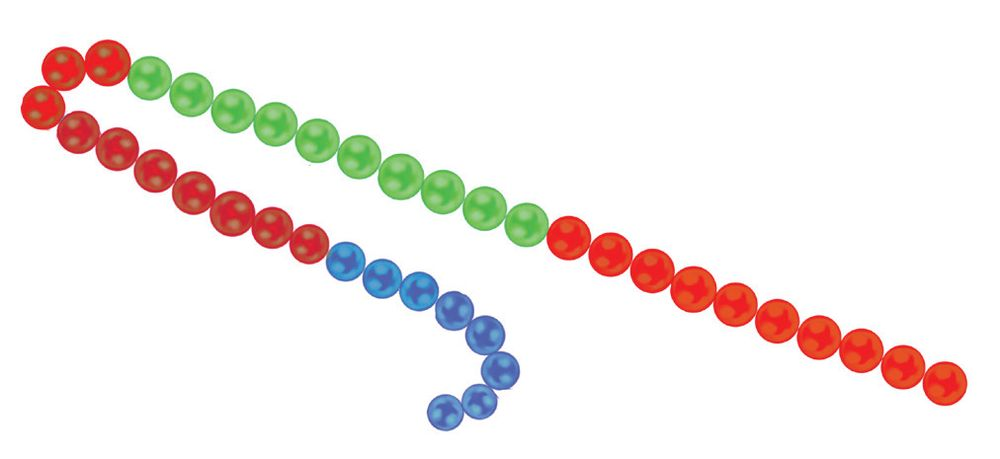


Number chain 23 + 26
See the number chain. 23
Write the answer
26
14 + 25
Draw beads to show this in a number chain.
How many beads are there in the number chain? What could be the number of beads in the chain. Numbers
...... + ......
See the number card Manav got.
32 + 13
How many beads does he need to make the chain?
Below are the cards others got.
16 + 42
35 + 14
22 + 67
Find how many beads each needs. Unit
5
United we stand
73


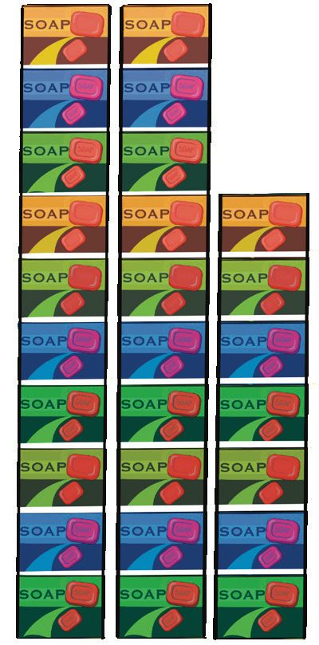
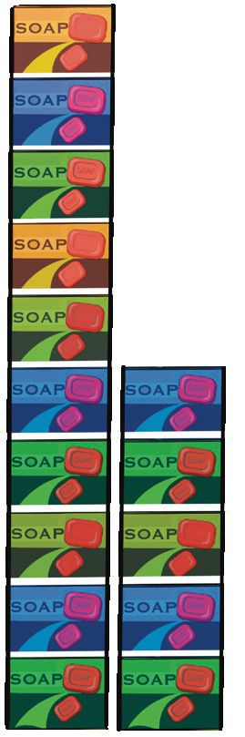


Look at how Manav and Avina have stacked the soap boxes. Avina
Manav
+
=
How many soaps did each stack? Avina
- 2 tens 7 ones = 27
Manav
- 1 ten 5 ones = 15
How many soaps did they stack together?
Add 27 and 15. 27 + 15 3 tens 12 ones. 27 + 15 20 + 10 +7 +5 30 + 12 = 30 + 10 + 2 = 42 74
Standard
Mathematics
2
20 + 7 10 + 5 30 + 12
= 27 = 15 = 42


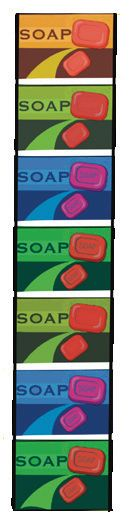
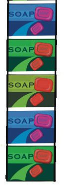
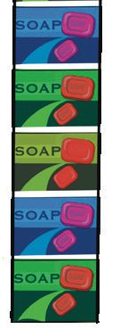

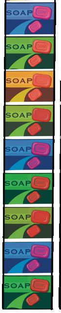


Adding tens
2 tens
+
1 ten
+
20
3 tens
=
=
10
=
30
Adding ones.
+
7
+
=
5
= 12 ones
+
=
1
ten
2
ones
7 + 3 + 2 = 10 + 2 = 12 Unit
5
United we stand
75

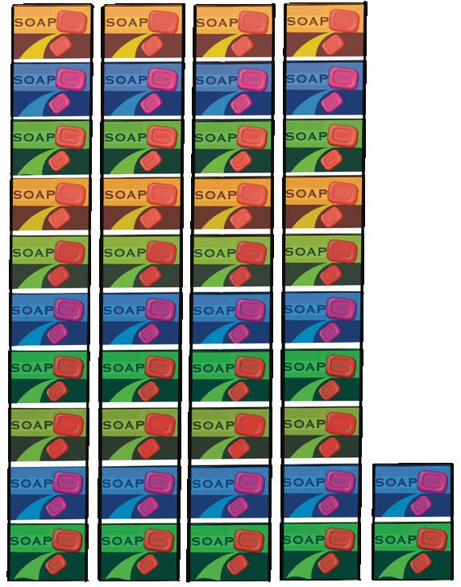

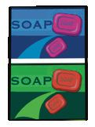
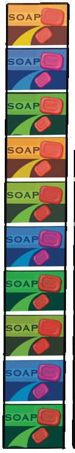


Total number of soaps.
3 tens + 1 ten + 2 ones.
+
4 tens.
=
2 ones.
How many soaps?
42 20 + 10 + 10 + 2 40 + 2 = 42
Find the total number of soaps and write the number.
+ How did you calculate? 76
Standard
Mathematics
2
=

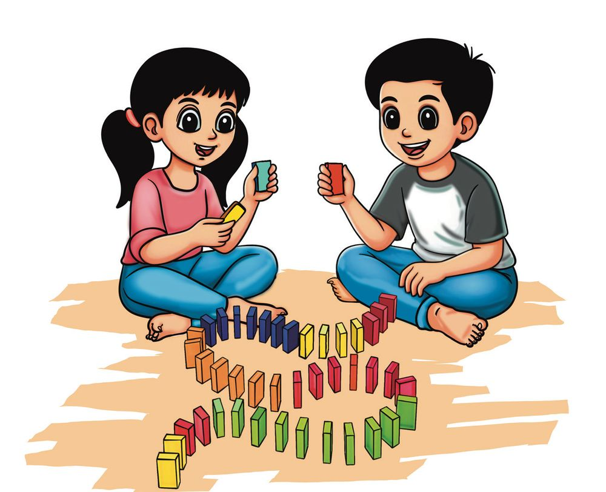
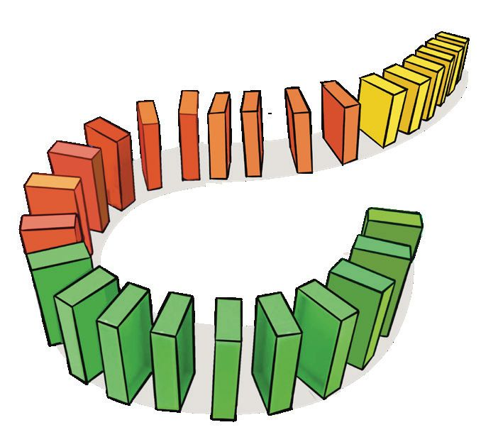


Playing with blocks. Haritha, Anshid, Nija and Ajal are playing with blocks. See the number of blocks Haritha and Anshid got.
Let’s play with blocks
How many blocks have they got in all?
+
Anshid
=
5
Unit
Haritha
United we stand
77

Nita and Ajal together got 68 blocks. Which group won the game? How many blocks more did they get? How did you calculate? Tell your friends.
What can be the number of blocks Nita and Ajal get? Nitha
Ajal
What I have found.
What my friend have found.
In the second game, the first team got 48 blocks. Anshid got 4 blocks more than Haritha. How many blocks did haritha get?
How many blocks did Anshid get?
How did you calculate? Write it down.
If all the blocks are arranged in groups of ten and ones, how many groups of tens will be there? How many ones? 78
Standard
Mathematics
2


The second group got 27 blocks. Ajal got 5 blocks less than Nita. Number of blocks Nita got. Number of blocks Ajal got. How did you calculate? Write it down.
Let’s buy soap.
Mia bought 13 soaps from Najma. Mohit bought double that number. How many soaps did Najma sell? How my friend calculated.
5
Unit
How I calculated.
United we stand
79


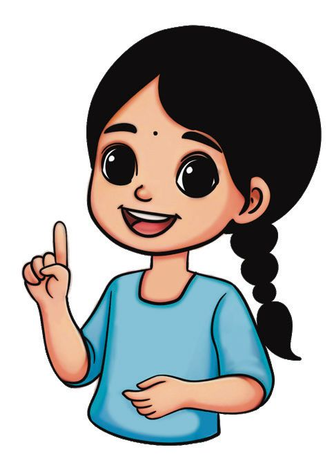

Soaps should be stacked like this. Draw the picture of 10 soaps stacked like this in your notebook.
l
How many soaps will be there in 7 stacks like this?
l
What about 10 stacks?
How you calculated?
Mental Calculations Nita’s mother gave 45 rupees to buy soap. Nita had 8 rupees. How much is the total? 8 rupees means 5 rupees and 3 rupees. I added 5 rupees to 45 rupees. So it became 50 rupees. Then added 3 to 50 rupees and I got 53 rupees
80
Standard
Mathematics
2
45 + 8 40 + 5 + 8 40 + 13 40 + 10 + 3 = 50 + 3 = 53 This is how I calculated


Can you answer? Mother put 58 soaps in a box. I put 2 more in that box. Mother put 9 again. How many soaps are in the box now?
12 rupees added to 3 rupees is 15 rupees. If 12 rupees is added to 8 rupees, how much will it be?
How I did it in my head
Tick the way you calculated 28 +36 in your head. 20 + 30=50 | 8 + 6 = 14 | 50 + 14 = 64 28 + 2 = 30 | 30 + 34 = 64 36 + 4 = 40 | 40 + 24 = 64 28 + 30 = 58 | 58 + 6 = 64 20 + 30 + 8 + 6 = 50 + 14 = 64 Write your method.
Unit
5
United we stand
81


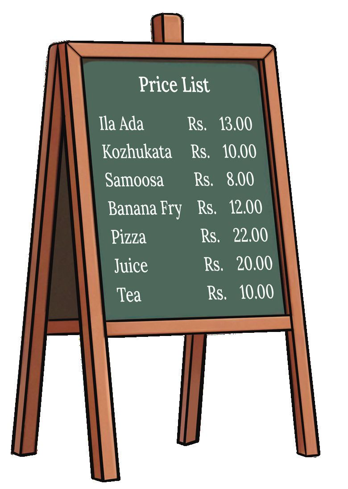
Manav and Avina went to the park and saw the price list at the tea shop. Avina said, “I have 40 rupees”. What all things can be bought with it? I will get juice, tea and kozhukata
For Rs. 40 we can get ................... .....................
There were various games in the park. Swing Bicycle Ride 25
Car Race
17
Avina went for a car race after the swing. How many rupees for both? How did you calculate? 82
Standard
Mathematics
2
28


Here are the numbers written on the number board. Fill in the empty cells.
+3 +5 +8 +9 10 30
13 35
40+8 =48 in the coloured cell.
40 50
58
70 80 90
From the school store Avina bought two books for 24 rupees and 23 rupees. Manav bought two books for 32 rupees and 16 rupees. Unit
5
United we stand
83

Colour the balloons. Balloons with equal sums should have the same colour.
28 + 17 22 + 48
46 + 46
35 + 35
30 + 15 80 + 12
39 + 53
19 + 26
84
Standard
Mathematics
2
53 + 17

Let’s add and find out. Write the sums in the cells. add 22
add 8
46
38
add 18
add 12
add 18
75
add 15
add 25
add 23 Add the numbers in the cells of the same colour and write them in the middle cell.
45 39
44 29
23
26
56 38
Write two-digit numbers in the coloured cells as above. Add those numbers and write them in the middle cell.
Unit
5
United we stand
85

Math board games 32
47 30
12
24 64
34
10 20
18 81
24
Find the sum of connected numbers.
32 + 34 = Write the sums here.
Is there anything special about these numbers? Write it down.
What are the other two-digit numbers like this?
How many two-digit numbers are there with the same digits repeated?
86
Standard
Mathematics
2
CONSTITUTION OF INDIA Part IV A FUNDAMENTAL DUTIES OF CITIZENS
ARTICLE 51 A Fundamental Duties- It shall be the duty of every citizen of India: (a) to abide by the Constitution and respect its ideals and institutions, the National Flag and the National Anthem; (b) to cherish and follow the noble ideals which inspired our national struggle for freedom; (c) to uphold and protect the sovereignty, unity and integrity of India; (d) to defend the country and render national service when called upon to do so; (e) to promote harmony and the spirit of common brotherhood amongst all the people of India transcending religious, linguistic and regional or sectional diversities; to renounce practices derogatory to the dignity of women; (f) to value and preserve the rich heritage of our composite culture; (g) to protect and improve the natural environment including forests, lakes, rivers, wild life and to have compassion for living creatures; (h) to develop the scientific temper, humanism and the spirit of inquiry and reform; (i)
to safeguard public property and to abjure violence;
(j) to strive towards excellence in all spheres of individual and collective activity so that the nation constantly rises to higher levels of endeavour and achievements; (k) who is a parent or guardian to provide opportunities for education to his child or, as the case may be, ward between age of six and fourteen years.